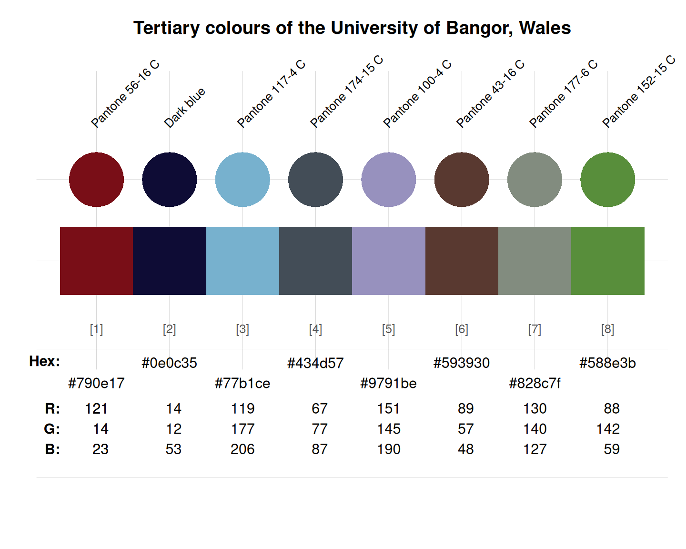

bangor_3 provides eight tertiary colours
of the University of Bangor, Wales, UK.
Source
Colour definitions are based on Bangor's Brand guidelines (PDF).
Details
bangor_3 is based on HEX color definitions
(see Bangor's
Brand guidelines, PDF, p. 10, for names and details).
Motto: Our history, heritage and landscape.
Bangor University is steeped in history and heritage. Our location is surrounded by the Snowdonia National Park. To reflect these elements we have created a subtle palette of colour, which also incorporates our environment: stone, slate, sand, water, forest, meadow and sea.
We use this palette to support our primary and secondary colours. We do not departmentalise the use of our colourways. (See how to use colour, in the ‘Brand Elements’ section of Bangor's brand guidelines, PDF.)
See also
bangor_1 for primary corporate colours of Bangor;
bangor_2 for secondary colours of Bangor;
bangor_4 for accessible web colours of Bangor;
seecol for viewing and comparing color palettes;
usecol for using color palettes;
simcol for finding similar colors;
newpal for defining new color palettes;
grepal for finding named colors.
Other Welsh university color palettes:
aberystwyth_1,
aberystwyth_2,
bangor_1,
bangor_2,
bangor_4,
cardiff_1,
cardiff_2
Examples
bangor_3
#> Pantone 56-16 C Dark blue Pantone 117-4 C Pantone 174-15 C
#> "#790e17" "#0e0c35" "#77b1ce" "#434d57"
#> Pantone 100-4 C Pantone 43-16 C Pantone 177-6 C Pantone 152-15 C
#> "#9791be" "#593930" "#828c7f" "#588e3b"
unikn::seecol(bangor_3,
main = "Tertiary colours of the University of Bangor, Wales") # view palette
